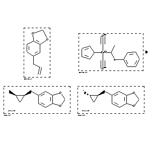

|  |
| FA | RX(1); FLST(1); RX(1) |
Reaction (1 of 1)
| Reaction ID | 3951297 |
| Reactant BRN | 136380; 7094329 |
| Reactant | 5-allyl-benzo[1,3]dioxole; h5-cyclopentadienylbis(carbonyl)(1-phenylthioethyl)iron(II) |
| Product BRN | 7111867; 7111866 |
| Product | 5-(2-methyl-cyclopropylmethyl)-benzo[1,3]dioxole; 5-(2-methyl-cyclopropylmethyl)-benzo[1,3]dioxole |
| No. of Reaction Details | 1 |
Reaction Details (1 of 1)
| Reaction Classification | Preparation |
| Reagent | trimethyloxonium tetrafluoroborate (TMO) |
| Solvent | CH2Cl2 |
| Temperature | 25 |
| Comment | Yield given. Yields of byproduct given. Title compound not separated from byproducts |
| Citation Pointer | 5934802; Journal; Kremer, Kenneth A. M.; Helquist, Paul; JORCAI; J.Organomet.Chem.; EN; 285; 1985; 231-252; |
Reference (1 of 1)
| Citation Number | 5934802 |
| Document Type | Journal |
| Authors | Kremer, Kenneth A. M.; Helquist, Paul |
| CODEN | JORCAI |
| Journal Title | J.Organomet.Chem. |
| Language Code | EN |
| (Series) Volume | 285 |
| Publication Year | 1985 |
| Page | 231-252 |